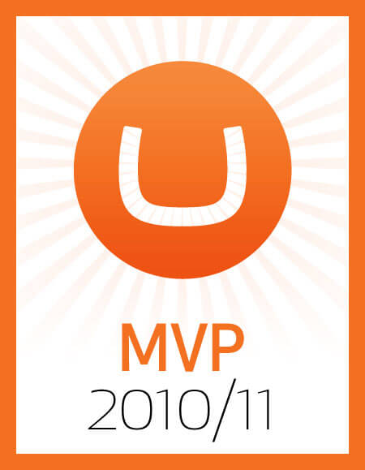
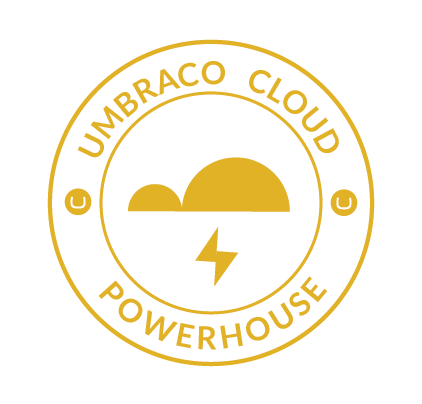
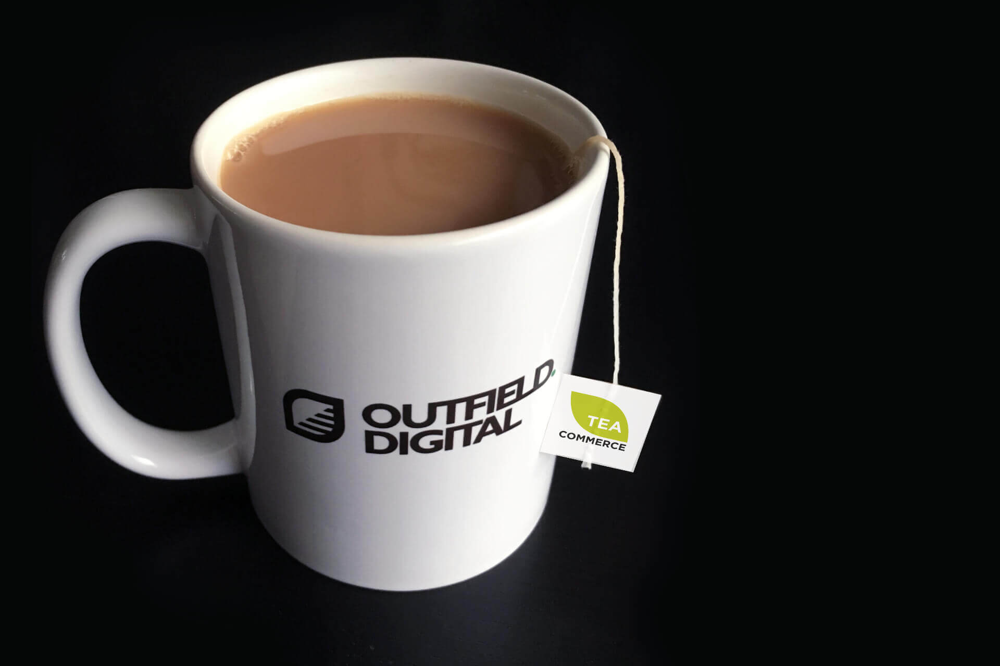
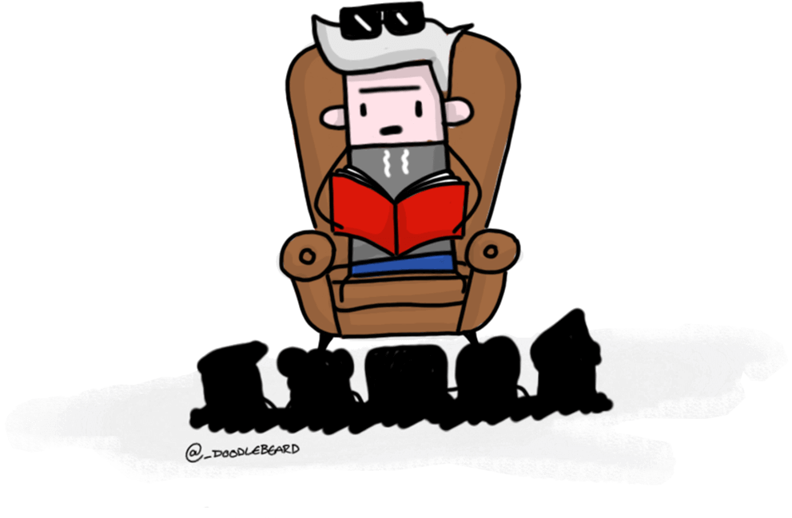

Hello!
SPARK 2019
The one about headless
CodeGarden 18
The one with the sock puppets
CodeGarden 15
The one about killer packages
CodeGarden 12
The one where v5 was killed off
and I rambled on about uComponents
@leekelleher
umBristol

Community / Packages
9TH - 12TH OCT 2020
↓ APPLY NOW ↓
https://codecab.in/

THE ROAD TO
CONTENTMENT
MAKING OF A KILLER
UMBRACO PACKAGE
CONFESSIONS OF A SERIAL
UMBRACO PACKAGE DEVELOPER
THE VIRTUE OF ACCEPTING
THE BANALITY AND SENSE OF
ENTITLEMENT IN OPEN SOURCE
BURN OUT!
MY TALK AT
SPARK 2019


GIVE ME YOUR
STACKED CONTENT!!!
BREXIT

BROWNFIELD
VS
GREENFIELD
Stacked Content
FOR V8
uComponents
Render Macro
Macro Picker
Entity Picker
Data List
Cascading Dropdown List
Icon Picker
Notes
My relationship with...
OPEN SOURCE
My relationship with...
ENTITLEMENT
My relationship with...
RIGHTS AND RESPONSIBILITIES
WHAT NOW?
WHAT NEXT?
COMMERCIAL POTENTIAL?
BETA RELEASE
VERY SOON
(this month)
github.com/leekelleher/umbraco-contentment
Thank you!
leekelleher.com/contact
@leekelleher